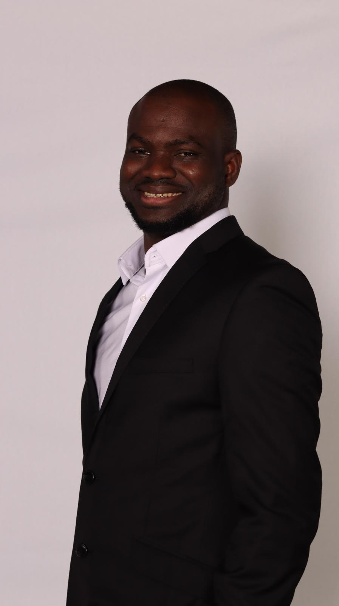

Background
I am a development economist and doctoral researcher in the Department of Economics at Ibn Haldun University in Istanbul. My research examines financial inclusion, FinTech adoption and household financial resilience, alongside questions about institutions, growth, labour markets and gender inequality. I am also a Research Fellow at the Savings Financing Research and Application Center at Ibn Haldun University, where I study liquidity risk in Türkiye’s interest-free savings finance sector.
My doctoral dissertation, FinTech and Financial Inclusion: Drivers, Resilience and the Digital Divide, brings together my interests in digital finance and the distribution of economic opportunity. Much of my work uses African survey microdata and cross-country panels. I also analyse Turkish-language consumer reviews and other digital data to study consumer experience and institutional trust.
My training spans applied mathematics, business administration and economics. I use econometrics, causal machine learning and computational text analysis, with an emphasis on transparent methods, careful interpretation and policy-relevant questions. Alongside research, I have taught and supported students in economics and contributed to volunteer organisations working with African students and young people.
I have published five peer-reviewed journal articles. Since October 2026, I have been a member of HUMAN-IT – COST Action 24167, Working Group 3: Social Transformations, Policy and the New Job Market, contributing research on labour-market inclusion, skills and digital transformation. My methods include Double Machine Learning, Causal Forests, explainable AI (SHAP), transformer-based sentiment analysis and BERTopic topic modelling.

Research appointments
Research Fellow at the Savings Financing Research and Application Center
Ibn Haldun University, Istanbul, Türkiye · Present
My research uses simulation to study liquidity risk in savings finance companies.
Growth Dependence and Liquidity Risk in Interest-Free Savings Finance
Education
Financial Engineering studies, WorldQuant University, Washington, US
2026–ongoing
PhD in Economics, Ibn Haldun University
2023–present | In progress
Dissertation: FinTech and Financial Inclusion: Drivers, Resilience and the Digital Divide
Supervisor: Asad Ul Islam Khan
MA in Economics, Ibn Haldun University
2021–2023
Thesis: Examining the Relationship between Government Size and Unemployment: Evidence from the Economic Community of West African States (ECOWAS)
Supervisor: Şerife Genç İleri
BSc in Business Administration, Anadolu University
2019–2022
BSc in Applied Mathematics, Bolu Abant Izzet Baysal University
2017–2021
Methods & data
My work combines survey microdata, cross-country panels and digital text. I use panel econometrics, causal inference, machine learning and explainable models, primarily in Python, Stata, EViews and GAUSS. My experience covers research design, data acquisition and cleaning, estimation, validation and reporting, including analytical projects with more than 240,000 observations.